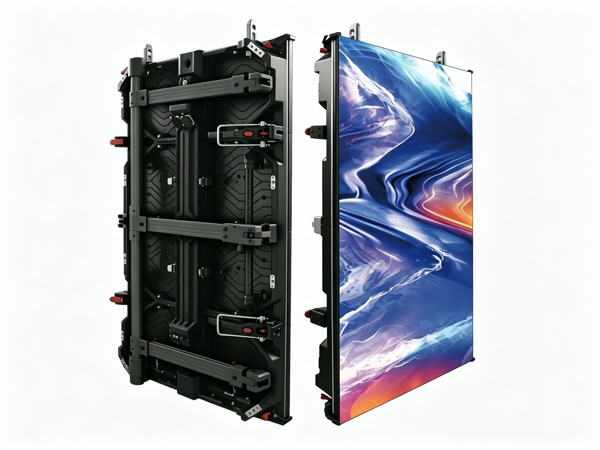
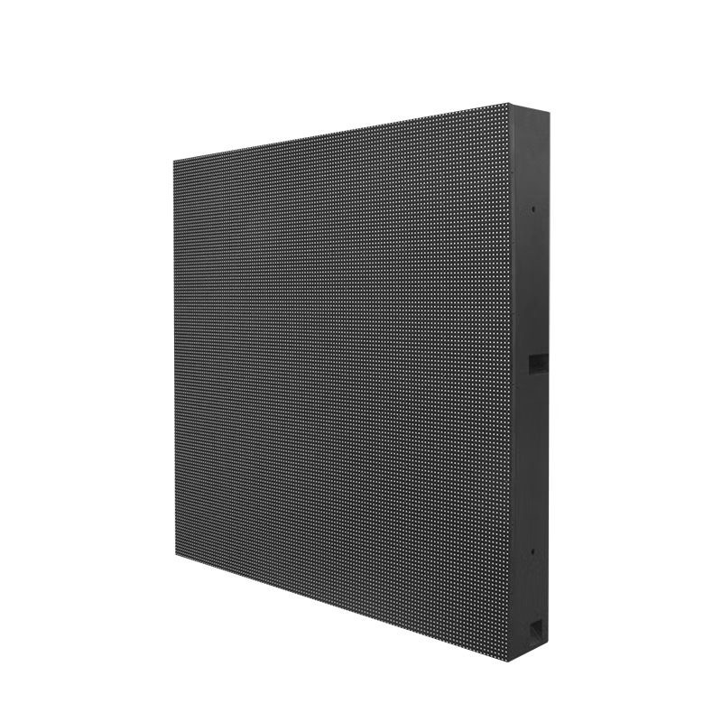

The LED display industry changes slowly for years and then quickly for a few. That is the pattern of 2026. After a long period in which improvements were incremental refinements of the same surface-mount architecture, three shifts are now moving at once: a packaging migration from SMD toward chip-on-board and micro-in-package, a race below the one-millimetre pixel pitch line, and a commercial and regulatory push toward efficiency. Each one resets what a buyer should put in a specification.
Packaging comes first because it determines everything downstream. COB bonds the emitter directly to the board and seals it under a protective layer, which improves contrast and reliability but demands a different manufacturing line and a different repair philosophy. MIP, short for micro-in-package, takes the opposite route: it packages the tiny emitters first and then mounts those packages with conventional SMT equipment. The two approaches are now competing for the same premium indoor market, and the outcome will shape pricing for years.
The pitch race is the visible front. P0.9 screens that were laboratory demonstrations a short while ago are now shipping products, and manufacturers are openly discussing P0.6 and below. The commercial question is whether the market needs them. For most boardrooms, control rooms, and retail spaces, P1.2 to P1.9 delivers everything the application requires, and the cost curve below P1 is still steep enough to change a project budget.
The third shift is quieter but has the longest reach. Energy efficiency, lifetime, and recyclability now appear in tenders alongside brightness and pitch, driven by building energy codes in Europe and by corporate sustainability reporting worldwide. A screen that draws less power per square metre and lasts longer is becoming a procurement requirement rather than a marketing differentiator. This guide examines each trend, the counter-trends worth watching, and what buyers should actually do about them in their next order.
SMD remains the volume workhorse. Surface-mounted devices are inexpensive, well understood, and supported by a mature repair ecosystem, and for pitches above roughly P1.9 they are still the rational choice for most indoor and outdoor work. The weaknesses are the visible gap between lamps, a glossy surface that reflects ambient light, and a plastic body that can be damaged by contact during installation or cleaning.
COB addresses all three. Because the emitters sit under a protective coating and the surface between them is matt black, COB delivers noticeably higher contrast, roughly 10000:1 on our CV-PRO indoor line, and it shrugs off the touches that damage SMD lamps. The surface is also more uniform at close range, which is why fine-pitch COB has become the default for immersive rooms and on-camera work. The trade-offs are a higher unit cost and a repair model that swaps a module rather than a single lamp.
MIP tries to keep the best of both. The micro emitters are packaged into a robust unit that can then be placed by standard SMT machines, which lowers the barrier to manufacturing very fine pitches and may push prices down faster than COB alone can. As of 2026 MIP is gaining share in the sub-P1 segment, but COB still leads in shipped fine-pitch volume, and the honest advice for buyers is that the choice should follow the application rather than the marketing label.
What actually matters in a tender is less the acronym than the evidence behind it. Ask for the contrast measured on the finished module rather than a chip datasheet figure, for the colour and brightness uniformity tolerance across a batch, and for the module-level repair procedure and its lead time. A well-made SMD wall outperforms a poorly made COB wall, and a supplier who cannot show measurement data cannot really support a claim.
For outdoor work the calculation is different again. D-PRO class cabinets at IP65 and 8000 nits or more are engineered around weather and thermal load rather than lamp geometry, and SMD with a good mask often remains the more cost-effective choice there. The packaging race is an indoor, fine-pitch story first, and outdoor buyers should not be pushed into it by marketing language.
| Technology | Typical Pitch Range | Contrast and Surface | Repair Model | Best Fit |
|---|---|---|---|---|
| SMD | P1.9 - P20 | Visible lamp gap, glossy | Single lamp or module | General indoor and all outdoor |
| COB | P0.6 - P2.5 | Matt surface, about 10000:1 | Whole module swap | Fine pitch, immersive, on camera |
| MIP | P0.6 - P1.9 | Near continuous, robust | Packaged unit | Emerging fine-pitch volume |
| COB with anti-glare coat | P1.2 - P2.5 | Very matt, low reflection | Whole module swap | Retail and broadcast at close range |
The sub-P1 segment is where marketing and reality diverge most sharply. A P0.9 screen is a genuine engineering achievement, and there are applications that need it: command centres where an operator sits two metres from a wall of data, film and broadcast stages where a camera captures the surface at short distance, and high-end lobbies where the screen is photographed for press. In those settings the finer pitch buys a real, visible improvement.
Outside those settings the argument weakens quickly. Human visual acuity sets a hard limit. Past a certain pitch for a given viewing distance the audience simply cannot resolve the extra pixels, and the money is better spent on the rest of the system. A P1.5 wall that is correctly driven will look better than a P0.9 wall with a weak processor, badly matched cabinets, and content authored for a different geometry.
The cost curve is the real constraint. Yield falls as pitch shrinks, because more emitters must be placed perfectly across the same board area, and the receiving and driver electronics become more demanding. That is why sub-P1 pricing is still far above the P1.2 to P1.9 band, and why total project cost, including structure, processing, and calibration, climbs faster than the pitch number falls.
There is also a serviceability penalty. The finer the pitch, the more the module cost matters in a spare-parts plan, and the harder it is to repair in the field. A buyer specifying sub-P1 should ask about module cost, module lead time, and whether the panel can be serviced without removing neighbouring cabinets, because those answers determine the real cost of ownership.
The sensible rule for 2026 is to derive pitch from the closest realistic viewing distance rather than to buy the finest available. Match the pitch to the application, then spend the remaining budget on refresh rate, calibration, and a content pipeline, because those are the things the audience actually perceives.
| Metric | Earlier Typical | 2026 Expectation | Why It Matters |
|---|---|---|---|
| Indoor refresh rate | 1920 Hz | 3840 Hz and above | Clean capture on camera, no banding |
| Rated lifetime | 50,000 - 70,000 h | 100,000 h | Lower total cost across the asset life |
| Power per square metre | Baseline | Reduced via driver efficiency | Meets building energy codes |
| Indoor brightness range | Narrow dimming | 800 - 2500 nits | Mood lighting without losing grey scale |
| Outdoor brightness | 5000 - 6000 nits | 5000 - 10000 nits | Readable against direct sunlight |
First, stop treating the packaging acronym as the decision. Decide the viewing distance, the ambient light level, and whether cameras will ever point at the screen. Those three answers narrow the packaging and the pitch almost automatically, and they keep the conversation anchored to the application rather than to whichever technology is being promoted hardest that quarter.
Second, weight efficiency and lifetime more heavily than you did five years ago. Energy codes in Europe and corporate sustainability reporting make power draw a compliance issue rather than a preference, and a rated 100,000-hour lifetime changes the whole-life cost calculation. Ask for power per square metre at a defined brightness and for the derating curve, not just a headline maximum output figure.
Third, insist on the processing and calibration that the panel deserves. A fine-pitch wall is only as good as its receiving system and its colour match, and the gap between a well-calibrated and a badly calibrated installation of identical hardware is larger than the gap between two pitch grades. Budget for calibration at commissioning and for re-calibration as a routine part of maintenance.
Fourth, plan the content and the serviceability from day one. The fastest way to waste a premium fine-pitch investment is to run content authored for a different system, or to install a sealed wall with no access plan. Ask your supplier for the module-level service procedure, the spare-part list, and the recommended calibration interval before the order is placed, not after the first failure.
Fifth, buy the relationship, not just the specification. Packaging technology is converging and pitch grades are becoming commodity items. What separates suppliers in 2026 is engineering support, documentation quality, and the willingness to answer a hard technical question in specifics. That is what protects the buyer over the several years a display wall actually serves.
Asia Vision Technology builds across the full pitch range from P0.9 to P20 and holds CE, FCC, and RoHS certification for export markets. Our CV-PRO indoor COB line reaches 10000:1 contrast with refresh rates of 3840 Hz and above, our X series rental cabinets measure 500 by 500 millimetres at 6.5 kilograms with front and rear service access, and our D-PRO outdoor range carries IP65 protection with brightness above 8000 nits.
We publish the numbers that matter for specification, including measured contrast, uniformity tolerance, power per square metre, and a rated 100,000-hour lifetime. Orders ship in 15 to 20 working days with a 3-year standard warranty, and our engineering team works directly with integrators on the packaging and pitch decision rather than quoting a catalogue part number.

For this requirement our range covers it directly: the RH-PRO fine-pitch COB (flagship, full redundancy) and the COB CV-PRO series (Ultra-HD fine pitch).